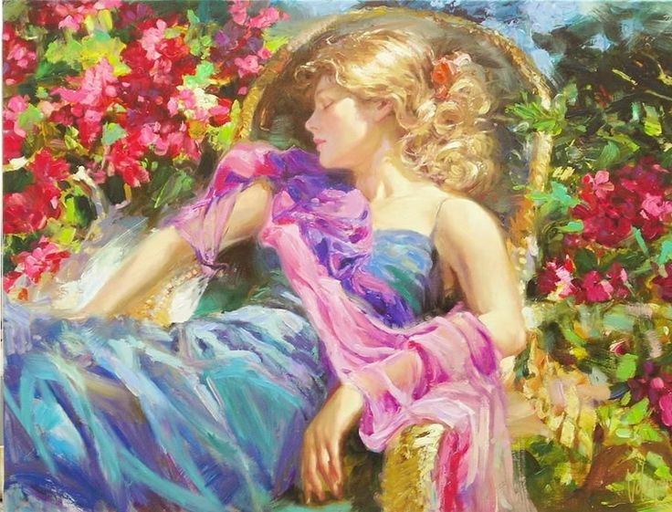

Line: I should have been a pair of ragged claws/Scuttling across the floors of silent seas.
(Original Art by Carrie Men)
Rationale:
This particular piece of artwork was chosen because it represents the self-deprecation of the speaker found in these
two lines. As shown, a figure sits at the bottom of the sea at the same level as sea creatures who “scuttle across
the floors”. The figure is looking down and pondering, while giving off the feeling of being inferior and hopeless.
In addition, the white circle around the figure contrasting the dark background colour demonstrates the solitude of
the figure, and how they keep to themselves much more often. The dark background itself represents the unknown
and darkness in the figure’s surroundings, meanwhile emphasizing the speaker’s feeling of regret and belittlement.
Line: And the afternoon, the evening, sleeps so peacefully!

Rationale:
(this will be the rationale)
Line: Smoothed by long fingers/Asleep...tired...or it malingers
Rationale:
(this will be the rationale)
Line: And I have seen the eternal Footman hold my coat, and snicker.
(Original Art by Helen Du)
Rationale:
(this will be the rationale)